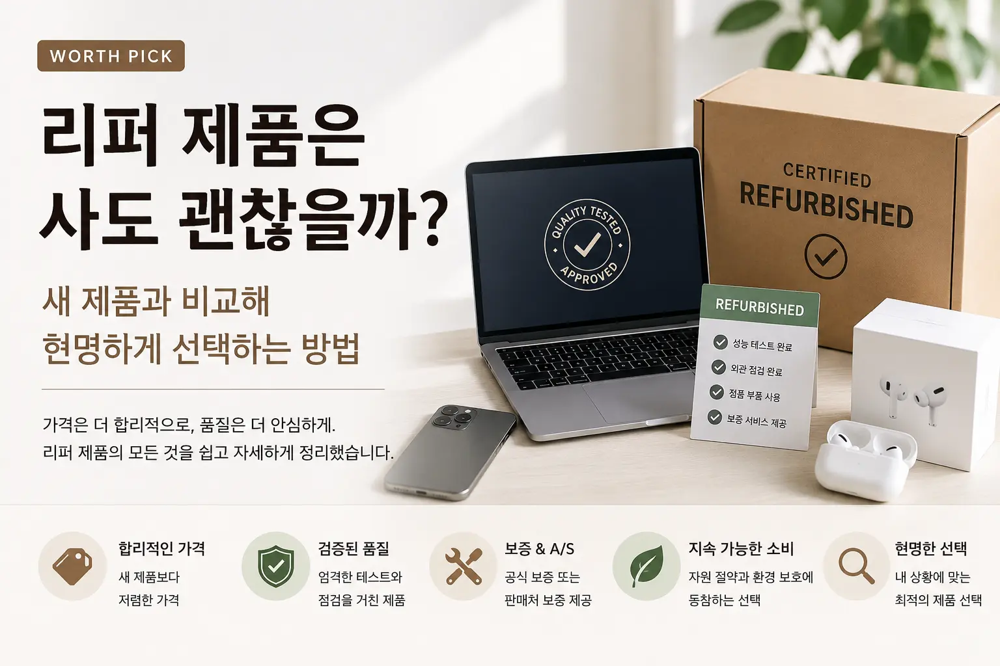

리퍼 제품은 사도 괜찮을까? 새 제품과 비교해 현명하게 선택하는 방법

- 리퍼 제품은 단순 중고가 아니라, 반품·초기 불량·전시 등의 제품을 점검하고 다시 판매하는 상품입니다.
- 가격이 저렴하다는 장점이 있지만, 보증 기간·반품 가능 여부·배터리 상태·외관 등급 확인이 중요합니다.
- WORTHPICK 기준으로는 “싸서 사는 제품”이 아니라 “상태와 조건이 명확해서 합리적인 제품”일 때 리퍼 구매를 추천합니다.
리퍼 제품이란 무엇인가?
리퍼 제품은 보통 새 제품으로 판매되었거나 판매 준비가 되었던 상품이 반품, 초기 불량, 단순 개봉, 전시, 포장 훼손 등의 이유로 다시 회수된 뒤 점검과 수리, 검수 과정을 거쳐 재판매되는 제품을 말합니다. 영어로는 refurbished product라고 부르며, 국내에서는 리퍼, 리퍼비시, 리퍼브 제품이라고도 표현합니다.
많은 사람들이 리퍼 제품을 중고 제품과 비슷하게 생각하지만, 둘은 엄연히 다릅니다. 중고 제품은 개인이 일정 기간 사용한 제품을 다시 판매하는 경우가 많고, 상태 확인이나 보증이 판매자마다 크게 다릅니다. 반면 리퍼 제품은 판매처나 제조사가 일정 기준에 따라 점검한 뒤 판매하는 경우가 많아 조건만 잘 확인하면 새 제품보다 합리적인 선택이 될 수 있습니다.
다만 모든 리퍼 제품이 좋은 것은 아닙니다. 리퍼라는 이름만 붙어 있고 실제 검수 기준이 불분명한 상품도 있습니다. 그래서 리퍼 제품을 살 때는 가격만 보는 것이 아니라 “누가 검수했는가”, “어떤 상태인가”, “보증은 얼마나 되는가”, “반품은 가능한가”를 함께 확인해야 합니다.
새 제품·리퍼·중고·전시상품 차이
리퍼 제품을 제대로 이해하려면 새 제품, 중고 제품, 전시상품과의 차이를 먼저 알아야 합니다. 겉보기에는 모두 비슷해 보여도 판매 조건과 위험 요소가 다릅니다.
| 구분 | 의미 | 장점 | 주의할 점 |
|---|---|---|---|
| 새 제품 | 미개봉 또는 정상 유통 신제품 | 상태가 가장 안정적이고 보증이 명확함 | 가격이 가장 높을 수 있음 |
| 리퍼 제품 | 회수 후 점검·수리·검수를 거쳐 재판매되는 제품 | 새 제품보다 저렴하면서 보증이 제공될 수 있음 | 상태 등급과 보증 조건 확인 필요 |
| 중고 제품 | 개인이 사용하던 제품을 다시 판매 | 가격이 가장 저렴할 수 있음 | 사용 이력과 고장 위험 파악이 어려움 |
| 전시상품 | 매장 또는 행사장에서 전시되었던 제품 | 외관이 양호하면 가격 이점이 큼 | 전원 사용 시간, 흠집, 구성품 누락 확인 필요 |
특히 리퍼 제품과 전시상품은 판매처에 따라 구분이 흐릿할 수 있습니다. 어떤 곳은 전시상품도 리퍼로 분류하고, 어떤 곳은 단순 반품 상품도 리퍼로 판매합니다. 그래서 상품명에 리퍼라고 적혀 있다고 해서 바로 믿기보다는 상세 설명을 꼼꼼히 읽는 것이 중요합니다.
리퍼 제품의 장점
1. 새 제품보다 가격이 합리적입니다
리퍼 제품의 가장 큰 장점은 가격입니다. 같은 모델이라도 새 제품보다 낮은 가격에 구매할 수 있기 때문에 예산을 줄이면서도 비교적 높은 등급의 제품을 선택할 수 있습니다. 특히 노트북, 태블릿, 스마트폰, 이어폰, 생활가전처럼 가격대가 높은 제품일수록 리퍼의 가격 이점이 크게 느껴질 수 있습니다.
2. 검수 과정을 거친 제품일 수 있습니다
제조사나 공식 판매처에서 판매하는 리퍼 제품은 기본적인 기능 점검, 외관 확인, 초기화, 부품 교체 등의 과정을 거치는 경우가 많습니다. 이 경우 단순 중고보다 상태가 명확하고 구매 후 문제 발생 가능성도 상대적으로 낮을 수 있습니다.
3. 보증이나 A/S가 제공될 수 있습니다
리퍼 제품은 판매처에 따라 일정 기간 보증을 제공하는 경우가 있습니다. 새 제품보다는 보증 기간이 짧을 수 있지만, 중고 거래에 비하면 훨씬 안심할 수 있는 요소입니다. 특히 전자제품은 구매 후 초기 문제가 나타날 수 있으므로 최소한의 보증 기간이 있는지 확인하는 것이 중요합니다.
4. 자원 낭비를 줄이는 선택이 될 수 있습니다
정상적으로 사용할 수 있는 제품을 다시 활용한다는 점에서 리퍼 제품은 지속 가능한 소비와도 연결됩니다. 단순 변심 반품이나 포장 훼손 제품이 폐기되지 않고 다시 사용된다면 자원 낭비를 줄이는 효과가 있습니다.
리퍼 제품의 단점
1. 외관 상태가 새 제품과 다를 수 있습니다
리퍼 제품은 미세한 흠집, 포장 훼손, 구성품 차이, 사용 흔적이 있을 수 있습니다. 기능에는 문제가 없어도 외관에 민감한 사람이라면 만족도가 떨어질 수 있습니다. 특히 선물용으로 구매할 때는 리퍼 제품이 적합하지 않을 수 있습니다.
2. 배터리 제품은 상태 확인이 중요합니다
스마트폰, 노트북, 태블릿, 무선 이어폰처럼 배터리가 들어가는 제품은 리퍼 구매 시 특히 신중해야 합니다. 외관이 깨끗해도 배터리 효율이 낮으면 사용 시간이 짧아질 수 있습니다. 배터리 성능 보증 여부나 교체 여부를 확인하는 것이 좋습니다.
3. 보증 기간이 짧을 수 있습니다
리퍼 제품은 새 제품보다 보증 기간이 짧거나, 일부 항목만 보증되는 경우가 있습니다. 또한 제조사 공식 보증이 아니라 판매처 자체 보증일 수도 있습니다. 이 경우 문제가 생겼을 때 처리 방식이 달라질 수 있으므로 구매 전 반드시 확인해야 합니다.
4. 구성품이 다를 수 있습니다
충전기, 케이블, 설명서, 박스, 거치대, 리모컨 등 구성품이 새 제품과 다를 수 있습니다. 가격이 저렴해 보여도 필요한 구성품을 별도로 구매해야 한다면 실제 비용은 크게 줄어들지 않을 수 있습니다.
리퍼로 사도 좋은 제품과 피해야 할 제품
리퍼 제품은 모든 제품군에 똑같이 적용하기 어렵습니다. 어떤 제품은 리퍼가 매우 합리적일 수 있지만, 어떤 제품은 새 제품을 사는 것이 더 나을 수 있습니다.
| 구분 | 리퍼 추천도 | 이유 |
|---|---|---|
| 노트북 | 추천 | 성능 대비 가격 이점이 크지만 배터리와 보증 확인 필요 |
| 태블릿 | 추천 | 외관과 배터리 상태가 좋다면 합리적 선택 가능 |
| 스마트폰 | 조건부 추천 | 배터리 효율, 액정 교체 여부, 침수 이력 확인 필요 |
| 무선 이어폰 | 신중 | 배터리 소모가 빠르고 위생 이슈가 있을 수 있음 |
| 대형가전 | 조건부 추천 | 설치·배송·A/S 조건이 명확하면 가격 이점이 있음 |
| 위생 관련 제품 | 비추천 | 사용 이력 확인이 어렵고 심리적 만족도가 낮을 수 있음 |
WORTHPICK 기준으로는 리퍼 제품이 적합한 제품군은 “상태 확인이 가능하고, 보증이 있고, 새 제품 대비 가격 차이가 충분한 제품”입니다. 반대로 위생이 중요하거나 배터리 수명이 핵심인 제품, 고장 시 안전 문제가 생길 수 있는 제품은 신중하게 접근하는 것이 좋습니다.
구매 전 체크리스트
- 제조사 공식 리퍼인지, 판매처 자체 리퍼인지 확인하기
- 보증 기간이 몇 개월인지 확인하기
- 반품 또는 교환이 가능한지 확인하기
- 외관 등급과 흠집 위치가 명확히 안내되는지 확인하기
- 배터리 제품이라면 배터리 효율 또는 교체 여부 확인하기
- 구성품이 새 제품과 동일한지 확인하기
- 수리 이력과 교체 부품 여부 확인하기
- 새 제품과의 가격 차이가 충분한지 비교하기
- 배송 중 파손 시 책임 소재가 명확한지 확인하기
- 구매 후 초기 테스트를 바로 진행할 수 있는지 확인하기
리퍼 제품 구매 시 자주 하는 실수
실수 1. 할인율만 보고 구매한다
리퍼 제품은 할인율이 커 보일수록 매력적입니다. 하지만 실제로는 새 제품의 최저가와 차이가 크지 않은 경우도 있습니다. 반드시 같은 모델의 현재 새 제품 가격과 비교해야 합니다.
실수 2. 보증 조건을 확인하지 않는다
리퍼 제품에서 보증은 매우 중요합니다. 단순히 “A/S 가능”이라는 문구만 보기보다 보증 기간, 보증 주체, 보증 범위를 확인해야 합니다. 제조사 보증인지 판매처 자체 보증인지에 따라 신뢰도가 달라질 수 있습니다.
실수 3. 배터리 상태를 가볍게 본다
배터리 내장 제품은 외관이 좋아도 사용 시간이 짧을 수 있습니다. 특히 스마트폰과 노트북은 배터리 성능이 만족도에 큰 영향을 줍니다. 가능하다면 배터리 성능 수치나 교체 여부가 명시된 제품을 고르는 것이 좋습니다.
실수 4. 구성품 누락을 놓친다
리퍼 제품은 박스나 기본 구성품이 누락될 수 있습니다. 충전기나 어댑터를 별도 구매해야 한다면 실제 총비용이 올라갑니다. 구매 전 구성품 목록을 반드시 확인해야 합니다.
실수 5. 선물용으로 구매한다
리퍼 제품은 실사용 목적에는 합리적일 수 있지만, 선물용으로는 적합하지 않을 수 있습니다. 박스 상태나 외관 흠집이 기대와 다를 수 있기 때문입니다.
리퍼 제품을 현명하게 고르는 기준
리퍼 제품을 살 때 가장 좋은 접근은 “새 제품보다 싸다”가 아니라 “내가 감수할 수 있는 차이가 무엇인가”를 생각하는 것입니다. 외관 흠집이 조금 있어도 괜찮은지, 보증 기간이 짧아도 괜찮은지, 구성품이 일부 없어도 괜찮은지 스스로 기준을 정해야 합니다.
또 하나 중요한 것은 가격 차이입니다. 새 제품과 리퍼 제품의 가격 차이가 5~10% 정도라면 새 제품을 사는 편이 더 나을 수 있습니다. 반면 20~40% 이상 차이가 나고, 보증과 반품 조건이 명확하다면 리퍼 제품은 충분히 가치 있는 선택이 될 수 있습니다.
| 가격 차이 | 판단 기준 |
|---|---|
| 5~10% | 새 제품 구매가 더 안정적일 수 있음 |
| 15~25% | 상태와 보증 조건이 좋다면 고려 가능 |
| 30% 이상 | 조건이 명확하다면 리퍼 구매 매력도가 높음 |
WORTHPICK의 결론
리퍼 제품은 무조건 피해야 할 제품도 아니고, 무조건 가성비가 좋은 제품도 아닙니다. 핵심은 정보의 투명성입니다. 제품 상태, 보증 기간, 반품 가능 여부, 구성품, 배터리 상태가 명확하다면 리퍼 제품은 새 제품보다 훨씬 합리적인 선택이 될 수 있습니다.
반대로 판매처가 불분명하고, 상태 설명이 모호하며, 반품이 어렵고, 새 제품과 가격 차이도 크지 않다면 리퍼라는 이름에 끌릴 필요가 없습니다. 이런 경우에는 새 제품을 선택하는 것이 장기적으로 더 편할 수 있습니다.
WORTHPICK이 추천하는 리퍼 구매 기준은 간단합니다. 가격이 낮은 이유가 명확하고, 내가 감수할 수 있는 차이가 분명하며, 문제 발생 시 보호받을 수 있는 조건이 있을 때 선택하는 것입니다. 좋은 소비는 무조건 새 제품을 고르는 것도, 무조건 저렴한 제품을 고르는 것도 아닙니다. 내 상황에 맞는 합리적인 기준을 세우는 것에서 시작됩니다.
자주 묻는 질문 FAQ
Q1. 리퍼 제품은 중고 제품과 같은 건가요?
아닙니다. 중고 제품은 개인 사용 이력이 중심인 경우가 많고, 리퍼 제품은 회수 후 점검과 검수를 거쳐 다시 판매되는 제품을 말합니다.
Q2. 리퍼 제품은 사도 괜찮나요?
판매처가 신뢰할 만하고 보증과 반품 조건이 명확하다면 괜찮습니다. 다만 상태 설명이 부족한 상품은 피하는 것이 좋습니다.
Q3. 공식 리퍼와 일반 리퍼는 어떤 차이가 있나요?
공식 리퍼는 제조사 또는 공식 유통사가 점검하고 보증하는 경우가 많습니다. 일반 리퍼는 판매처 자체 기준으로 검수하는 경우가 있어 조건을 더 꼼꼼히 확인해야 합니다.
Q4. 리퍼 제품은 보증이 되나요?
제품과 판매처에 따라 다릅니다. 일부는 제조사 보증이 제공되고, 일부는 판매처 자체 보증만 제공됩니다. 구매 전 보증 기간과 범위를 확인해야 합니다.
Q5. 리퍼 스마트폰은 사도 괜찮나요?
배터리 효율, 액정 상태, 침수 이력, 보증 여부가 명확하다면 고려할 수 있습니다. 다만 정보가 부족하다면 신중해야 합니다.
Q6. 리퍼 노트북은 어떤 점을 봐야 하나요?
배터리 상태, 저장장치 사용 시간, 키보드와 포트 상태, 화면 불량 여부, 보증 기간을 확인하는 것이 좋습니다.
Q7. 리퍼 제품은 선물용으로 괜찮나요?
일반적으로는 추천하지 않습니다. 박스 상태나 외관이 새 제품과 다를 수 있어 선물용 만족도가 낮을 수 있습니다.
Q8. 새 제품과 가격 차이가 별로 안 나면 리퍼를 사도 될까요?
가격 차이가 작다면 새 제품을 추천합니다. 리퍼 제품은 새 제품 대비 가격 차이가 충분할 때 구매 가치가 높아집니다.
Q9. 전시상품도 리퍼 제품인가요?
판매처에 따라 전시상품을 리퍼로 분류하기도 합니다. 전시상품은 전원 사용 시간과 외관 흠집, 구성품 누락 여부를 확인해야 합니다.
Q10. 리퍼 제품 구매 후 바로 해야 할 일은 무엇인가요?
받자마자 외관, 구성품, 작동 상태, 배터리 상태, 충전, 화면, 버튼, 포트 등을 확인해야 합니다. 반품 가능 기간이 지나기 전에 초기 테스트를 마치는 것이 좋습니다.